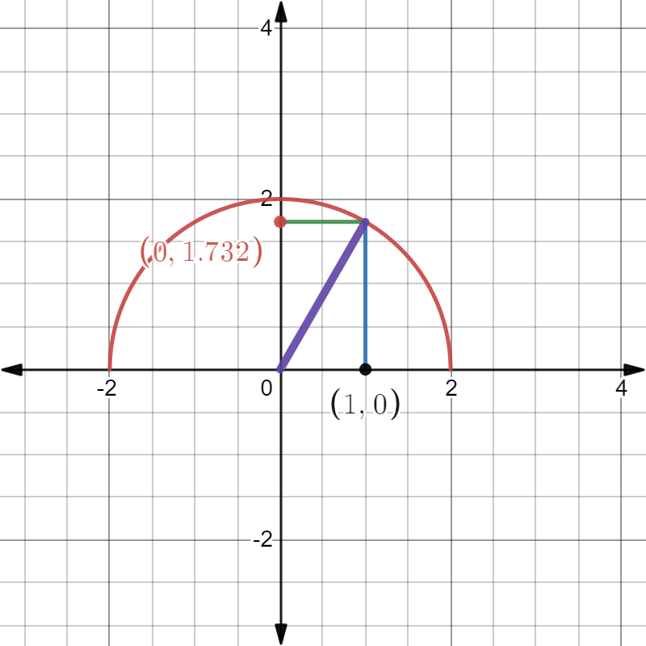

§5.2 基本定理、公式及其计算
可积函数未必有原函数，有原函数的函数未必可积。
一、微积分基本定理
定义1（变限积分）：设 f(x) 在 [a,b] 连续，∀x∈[a,b]，f(x) 在 [a,x] 上可积
称 ϕ(x)=∫axf(t)dtx∈[a,b] 为变上限积分，ψ(x)=∫xbf(t)dtx∈[a,b] 为变下限积分；统称为变限积分。
定理1：设 f(x) 在 [a,b] 上连续，则 ϕ(x)=∫axf(t)dt 在 [a,b] 上处处可导，且 ϕ′(x)=dxd∫axf(t)dt=f(x)x∈[a,b]
定理2：若 F(x) 为连续函数 f(x) 在 [a,b] 的一个原函数，有
∫abf(x)dx=F(b)−F(a)=F(x)∣ab
[牛顿-莱布尼兹公式]
例题
- [∫ax2f(t)dt]′=f(x2)⋅2x
[∫ax2xf(t)dt]′=[x∫ax2f(t)dt]′=∫ax2f(t)dt+x⋅f(x2)⋅2x=f(x2)⋅2x+2x2f(x2)=2x(x+1)f(x2)
∫ee2xlnx1∫xlnx1dxdx=ln∣lnx∣∣ee2=ln2=∫lnx1dlnx=ln∣lnx∣+C
f(x)∫−11f(x)dx={3x2−1,−1≤x≤0e2x,0≤x≤1=∫−10f(x)dx+∫01f(x)dx=∫−10(3x2−1)dx+∫01e2xdx=(x3−x)∣−10+21e2x∣01=21(e2−1)
∫−22max{x,x2}dx=∫−20x2dx+∫01xdx+∫12x2dx=31x3∣−20+21x2∣01+31x3∣12=38+21+37=211
∫0yetdt+∫0xcostdt=0，求 dxdy
法一：ey−1+sinx=0
两边对x求导
ey⋅y′−0+cosx=0⇒y′=−eycosx=sinx−1cosx
法二：两边对x求导
ey⋅y′+cosx=0⇒y′=−eycosx=sinx−1cosx
x→0limx4∫0x2sintdt=x→0lim4x3sinx2⋅2x=x→0lim4⋅x22sinx2=21
- 证明 g(y)=∫0y[∫0xf(t)dt]dxh(y)=∫0yf(x)(y−x)dx⇒g(y)=h(y)，y∈[0,+∞]，f(x) 连续
证：g′(y)=∫0yf(t)dt=ydg(y)
h′(y)=[∫0yf(x)ydx−∫0yxf(x)dx]′=∫0yf(x)dx+yf(y)−yf(y)=∫0yf(x)dx=g′(y)
∴g(y)=h(y)+C
y=0 时，g(0)=0=h(0)
∴C=0，即 g(y)=h(y)
- f(x)=x2−x∫02f(x)dx+2∫01dx，求 f(x)
解：设 a=∫02f(x)dx，b=∫01f(x)dx
f(x)=x2−ax+2b
a=∫02(x2−ax+2b)dx=38−2a+4b
b=∫01(x2−ax+2b)dx=31−3a+2b
⎩⎨⎧3a−4b2a−b=38=31⇒⎩⎨⎧ab=34=31
∴f(x)=x2−34x+31
n→∞limn1(sinn1+sinn2+⋯+sinnn)=n→∞lim(i=1∑nsinn1)n1=n→∞lim(i=1∑n(sinn1⋅n1))=n→∞limi=1∑nf(ni)⋅Δxi=∫01sinxdx=−cosx∣01=1−cos1
an=n1n(n+1)(n+2)(n+3)⋯(n+n)，求 n→∞liman
解：
n→∞limlnan=lnn1+n1[ln(n+1)+ln(n+2)+⋯+ln(n+n)]=n1[ln(n+1)+ln(n+2)+⋯+ln(n+n)−nlnn]=n1[ln(1+n1)+ln(1+n2)+⋯+ln(1+nn−1)]=∫01ln(1+x)dx=2ln2−1
∴n→∞liman=e2ln2−1=e4
二、定积分的换元法和分部积分
-
[换元法]
∫abf(x)dx=x=φ(t)∫αβf[φ(t)]φ′(t)dt
其中 x:a→b，t:α→β，φ(α)=a，φ(β)=b
-
[偶倍奇零] f(x) 在 [−a,a] 上连续：
f(−x)=f(x)f(−x)=−f(x)⇒∫−aaf(x)dx=2∫0af(x)dx⇒∫−aaf(x)dx=0
-
f(x)=f(x+T)⇒∫aa+Tf(x)dx=∫0Tf(x)dx
证明：
∫aa+Tf(x)dx=∫a0f(x)dx+∫0Tf(x)dx+∫Ta+Tf(x)dx=∫0af(t+T)dt(t=x−T)=∫0af(t)dt
推论 f(x)=f(x+T)⇒∫aa+nTf(x)dx=n∫0Tf(x)dx
- [分部积分法]
∫abudv=(uv)∣ab−∫abvdu
例题
- 求 ∫014−x2dx
法一：
∫4−x2dx=x=2cost∫22cos2tdt=2∫(1+cos2t)dt=2t+sin2t+C=2arcsin2x+x24−x2+C=F(x)
原式 =F(x)∣01=3π+23
法二：
原式=x=2sint∫06π22cos2tdt=(2t+sin2t)∣06π=3π+23[x:0→1,sint:0→21,t:0→6π]
法三：

S=21×1×3+36030×22×π=3π+23
- ∫02π1+sin2xcosxdx
法一：
∫1+sin2xcosxdx=∫1+sin2x1dsinx=arctan(sinx)+C
原式 =arctan(sinx)∣02π=4π
法二：
原式=u=sinx∫011+u21du=arctanu∣01=4π
- dxd∫0xsin100(x−t)dt
解：
∫0xsin100(x−t)dt=u=x−t∫x0sin100u(−1)du
原式 =dxd=∫0xsin100udu=sin100x
∫0nπ1+sin2xdx=n∫0πsin2x+cos2x+2sinxcosxdx=n∫0π∣sinx+cosx∣dx=2n∫0π∣sin(x+4π)∣dx=2n(∫043πsin(x+4π)dx−∫43ππsin(x+4π)dx)=22n
∫−111+1−x22x2+xcosxdx=∫−111+1−x22x2dx+∫−111+1−x2xcosxdx=4∫011+1−x2x2dx+0=4∫01xx2(1−1−x2)dx=4∫01(1−1−x2)dx=4∫011dx−4∫011−x2dx=4−π
- 求 ∫04πsec3xdx
法一：设原式 =I
I=∫04πsec2xsecxdx=∫04πusecxdvtanx=secxtanx∣04π−∫04πtan2xsecxdx=2−∫04π(sec2x−1)secxdx=2−∫04πsec3xdx+∫04πsecxdx=2−I+[ln∣secx+tanx∣]∣04π=2−I+ln(2+1)
∴I=21[2+ln(2+1)]
法二：
原式=∫04πcos3x1dx=∫04π(1−sin2x)21dsinx=t=sinx∫022(1−t2)21dt=∫0221−t41dt+∫022(1−t)241dt+∫0221+t41dt+∫022(1+t)241dt=⋯=21[2+ln(2+1)]
- f′′(x) 在 [0,1] 连续，f(0)=1,f(2)=3,f′(2)=5，求 ∫01xf′′(2x)dx
解：
原式=21∫01xdf′(2x)=21[xf′(2x)∣01−∫01f′(2x)dx]=21[1×f′(2)−0−21∫01df(2x)]=21[f′(2)−21[f(2)−f(0)]]=2
- 求 In=∫02πsinnxdx，Jn=∫02πcosnxdx
解：Jn=x=2π−t∫2π0−cosn(2π−t)dt=∫02πsinntdt=In
I0=∫02π1dx=2π
I1=∫02πsinxdx=−cosx∣02π=1
In=−∫02πsinn−1xdcosx=−sinn−1xcosx∣02π+(n−1)∫02πxcos2xsinn−2xdx=(n−1)∫02π(1−sin2x)sin(n−2)xdx=(n−1)∫02πsin(n−2)xdx−(n−1)∫02πsinnxdx=(n−1)In−2−In
In=nn−1In−2
I2m=(2m)!!(2m−1)!!⋅2π
I2m+1=(2m+1)!!(2m)!!